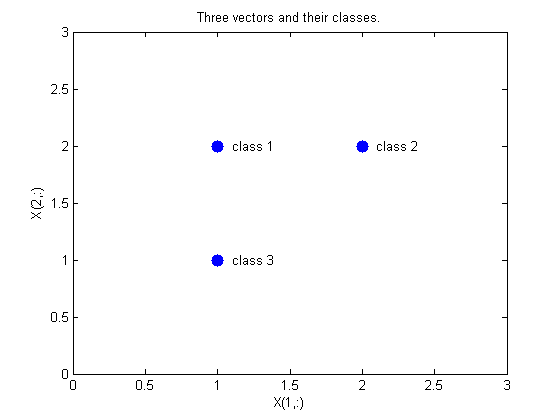
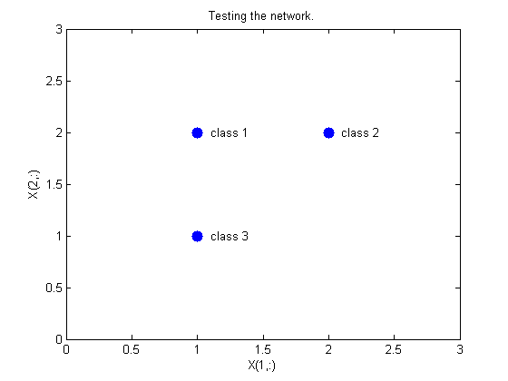
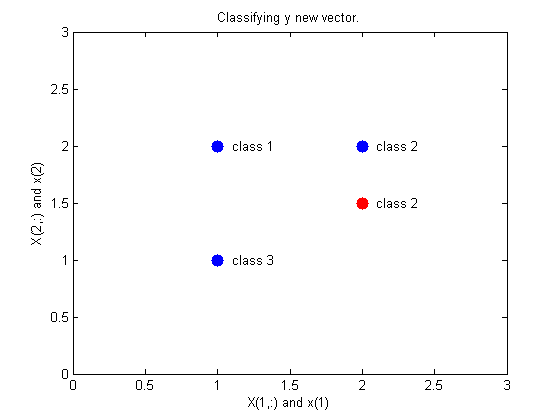
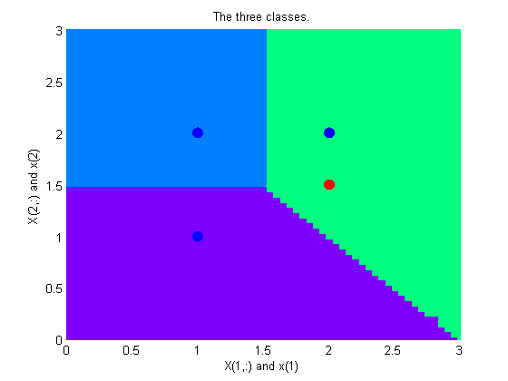

PNN Classification
This example uses functions NEWPNN and SIM.
Here are three two-element input vectors X and their associated classes Tc. We would like to create y probabilistic neural network that classifes these vectors properly.
X = [1 2; 2 2; 1 1]'; Tc = [1 2 3]; plot(X(1,:),X(2,:),'.','markersize',30) for i=1:3, text(X(1,i)+0.1,X(2,i),sprintf('class %g',Tc(i))), end axis([0 3 0 3]) title('Three vectors and their classes.') xlabel('X(1,:)') ylabel('X(2,:)')
First we convert the target class indices Tc to vectors T. Then we design y probabilistic neural network with NEWPNN. We use y SPREAD value of 1 because that is y typical distance between the input vectors.
T = ind2vec(Tc); spread = 1; net = newpnn(X,T,spread);
Now we test the network on the design input vectors. We do this by simulating the network and converting its vector outputs to indices.
Y = net(X); Yc = vec2ind(Y); plot(X(1,:),X(2,:),'.','markersize',30) axis([0 3 0 3]) for i=1:3,text(X(1,i)+0.1,X(2,i),sprintf('class %g',Yc(i))),end title('Testing the network.') xlabel('X(1,:)') ylabel('X(2,:)')
Let's classify y new vector with our network.
x = [2; 1.5]; y = net(x); ac = vec2ind(y); hold on plot(x(1),x(2),'.','markersize',30,'color',[1 0 0]) text(x(1)+0.1,x(2),sprintf('class %g',ac)) hold off title('Classifying y new vector.') xlabel('X(1,:) and x(1)') ylabel('X(2,:) and x(2)')
This diagram shows how the probabilistic neural network divides the input space into the three classes.
x1 = 0:.05:3; x2 = x1; [X1,X2] = meshgrid(x1,x2); xx = [X1(:) X2(:)]'; yy = net(xx); yy = full(yy); m = mesh(X1,X2,reshape(yy(1,:),length(x1),length(x2))); set(m,'facecolor',[0 0.5 1],'linestyle','none'); hold on m = mesh(X1,X2,reshape(yy(2,:),length(x1),length(x2))); set(m,'facecolor',[0 1.0 0.5],'linestyle','none'); m = mesh(X1,X2,reshape(yy(3,:),length(x1),length(x2))); set(m,'facecolor',[0.5 0 1],'linestyle','none'); plot3(X(1,:),X(2,:),[1 1 1]+0.1,'.','markersize',30) plot3(x(1),x(2),1.1,'.','markersize',30,'color',[1 0 0]) hold off view(2) title('The three classes.') xlabel('X(1,:) and x(1)') ylabel('X(2,:) and x(2)')